Replace pair-programmer's hand-rolled scaffolding with the official Claude Code mechanisms that already do the same job — and retune its prompt surface for the Claude 5 generation — without changing its lifecycle, gates, or paradigms.
Status markers:
[] idle ·
[wip] in progress ·
[x] done ·
[f] failed
pair-programmer was built before several Claude Code primitives existed, and its prompt surface was tuned for a prior model generation. The result is a harness that hand-rolls things the platform now provides, and that carries prose scaffolding the Claude 5 models explicitly advise removing. This plan closes both gaps.
Hard scope rule: nothing here changes pp's functionality, purpose, or paradigms. Every item either replaces a hand-rolled mechanism with the official equivalent, or closes a gap where an official mechanism exists and pp is not using it. Anything that would alter behavior was dropped or gated behind a regression fixture.
gpt-5.6-terra @ medium (CONSTITUTION Article V as amended 2026-09-03, SHA 5df284cb, superseding 13b4fa18). The same article pins the agy default gemini-3.8-flash-medium and mandates cross-vendor judging at every gate, not just spec/design/security/contract.retry_with_critique.finalize_run hard blocks — PP-VG-1/2/4, the missability checks, and the same-producer + same-model verdict guard at runs.ts:1057+ (the agy exemption on that guard was removed in J4).CONSTITUTION.md is never edited.~/.pair-programmer/state.db stays the sole source of truth for runs, verdicts, and budget. No Claude Code feature becomes a source of truth for run state.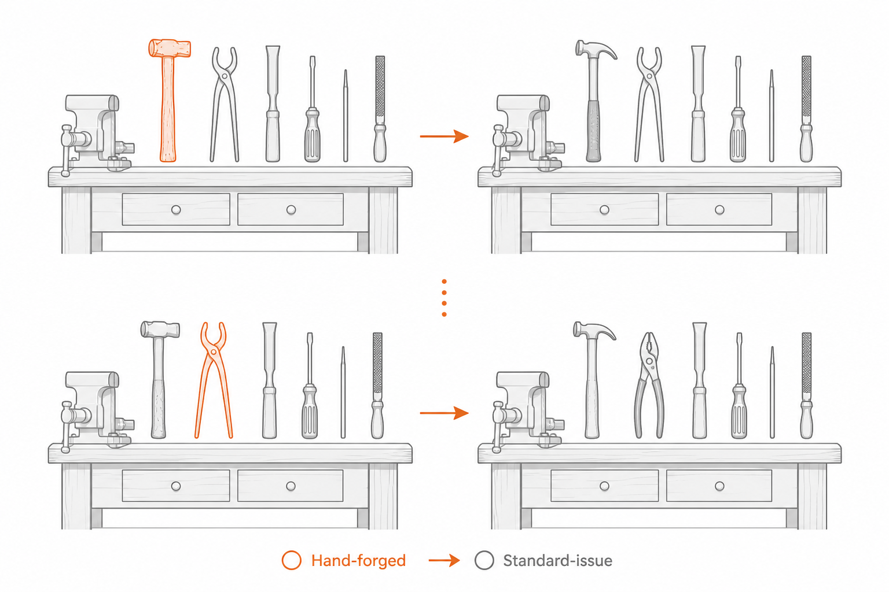
Measured directly against the current tree and the official documentation index at
code.claude.com/docs/llms.txt:
| Area | Current state | Consequence |
|---|---|---|
| MCP server instructions | All three servers pass only {name, version} (harness-server.ts:1318) | Tool search is on by default, so 76 pp_harness tool definitions are deferred and instructions + tool names are all that load at session start. pp supplies no instructions. |
| Skills | 11 loose .claude/skills/*.md files; no SKILL.md anywhere | Not a documented layout, so none of them load. run.md still says "Follow the pair-programmer skill protocol exactly." |
| Subagents | 75 files in .claude/agents/, but only 42 are agents; 4 of 17 frontmatter fields used | Corrected 2026-09-05. The other 33 are one-line pointer stubs naming C:/AiAppDeployments/…, with no frontmatter — they cannot load, so the "33 permissive agents" security gap does not exist. The real defect is 50 dangling pointers (33 agents + 17 skills). Now #38 / Phase E. |
| Hooks | 26 command hooks in .claude/settings.json, none setting timeout; 5 of 33 events used | A hung daemon hangs a tool call. Failed critiques, API-killed runs, and compaction are all unobserved. Note: hooks.json (Copilot runtime) already sets timeoutSec: 30 on all 26 — use it as the classification baseline rather than inventing values. |
| Hook wiring | 29 handlers implemented in dispatcher.ts; only 26 wired in .claude/settings.json, and the same 26 in hooks.json | All three TheEights recall hooks are dead code. eights-recall-project, eights-recall-stage, and eights-recall-request are implemented and reachable by name but wired in no settings file, in either runtime. README lines 152 and 236 both claim hooks.json carries them; it does not. |
| MCP result size | No anthropic/maxResultSizeChars annotations | get_run returns whole run trees against a 25,000-token default cap — six existing runs already exceed it, the largest at 137,255 chars (~34,314 tokens). Corrected 2026-09-06: this row originally named replay as an offender too. It is not — measured, replay is a subset of get_run (23,588 chars at most, ratio never above 0.28) and needs no annotation. |
| Driver control flow | 25,609 bytes of prose in run.md | Already produced one unrecoverable stall: the daemon returned next_action: "dispatch_cross_vendor_rejudge" and no caller implemented it. |
| Prompt surface | Tuned pre-Claude-5 | Opus 5 guidance says to remove "legacy harness scaffolding that adds separate verification steps"; Sonnet 5 is literal and will not generalize across the four same as /pp:run cross-references. |
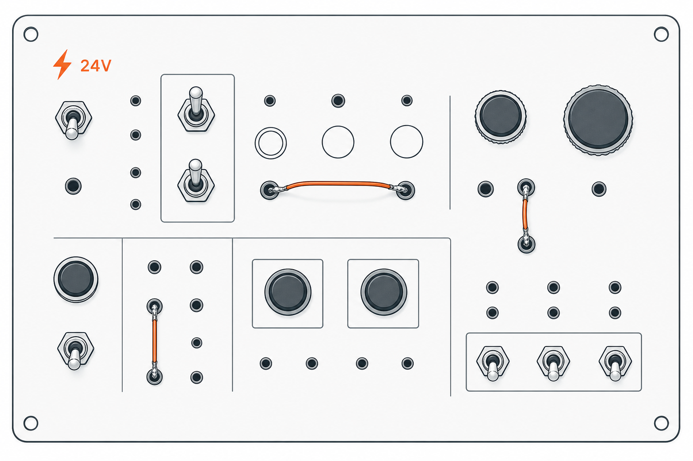
Ten phases. Each either fills an empty official socket or retunes prose for the Claude 5 generation. The daemon, the gates, the judge pin, and the SQLite ledger are untouched throughout.
| # | Decision | Consequence accepted |
|---|---|---|
| D1 | No plugin migration. .claude/ project scope + scripts/install-user.ps1 stay. | No claude plugin validate, no namespacing, no userConfig. Q1 stays open. |
| D2 | Dynamic workflows scoped to the best-of-N fan-out only. | Full lifecycle driver stays prose. |
| D3 | Skills migrate to <name>/SKILL.md with user-invocable: false + agent skills: preload. | They become model-invocable where previously inert. |
| D4 | Full subagent tuning including judges. Clarified 2026-09-05: agent effort: sets the Claude wrapper's reasoning only — it is orthogonal to judge_reasoning_effort, the vendor CLI's effort recorded on the verdict. It does not escalate the verdict. | Gated behind deterministic regression fixtures. |
| D5 | Hook adapters for the mcp_tool conversion register on pp_harness, not a new server. | Tool list grows 76 → ~100, so Phase B's instructions must never enumerate tools. |
| D6 | No async: true. mcp_tool only. | Forgoes the prompt-path latency win; keeps SQLite write ordering intact. daemon-up stays a command hook — it is the liveness probe. |
| D7 | model: haiku piloted on /pp:budget before the other seven. | Settles empirically whether Haiku can drive a deferred MCP tool, which docs do not confirm. |
| D8 | Work lands on branch feat/cc-standards-alignment, mirrored to GitHub issues, tracked in this file. | This document is the living tracker; status markers below are authoritative for narrative, GitHub for state. |
Status sync: [] = issue open, unassigned ·
[wip] = open, assigned, in-progress ·
[x] = issue closed ·
[f] = open, blocked, with a Notes entry saying why.
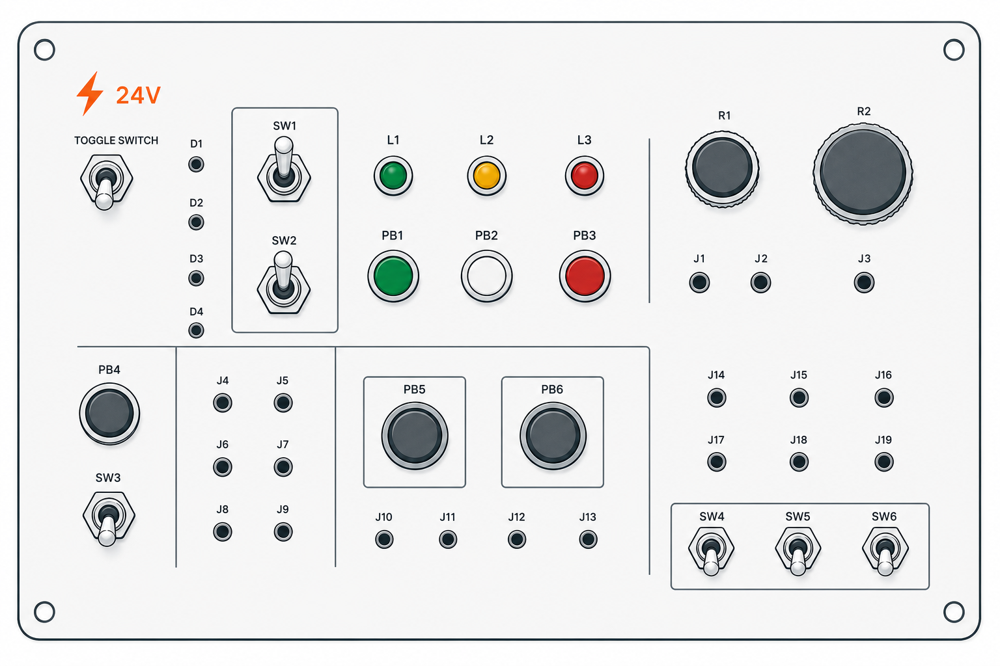
daemon/src/mcp/harness-server.ts — new Server() at :1318 needs instructions; tools/list at :1323-1327 needs _meta annotations.daemon/src/mcp/codex-server.ts, daemon/src/mcp/antigravity-server.ts — same instructions gap..claude/settings.json — 26 hooks with no timeouts; only permissions.allow + hooks keys; stale _comment claiming 24 hooks..claude/skills/*.md — the 11 loose files to migrate..claude/agents/*.md — 75 files; 33 without tools:, 35 without model:..claude/agents/engineer.md — step 4.5 mandatory self-verification; pinned claude-sonnet-5..claude/commands/pp/best-of.md — steps 6 / 6.5 / 7 / 8 / 9 / 9.5 define the fan-out boundary; step 27 references "verification step (3.5)" against engineer.md's 4.5..claude/commands/pp/run.md, .claude/commands/pp/review.md — same as /pp:run cross-references.AGENTS.md — 96 lines / 12,446 bytes; the cross-tool contract Codex, agy, and Copilot all read.daemon/src/orchestrator/runs.ts — recordAttempt slot idempotency at :433; verdict guard at :857..claude/skills/<name>/SKILL.md ×11 — the migrated skills..claude/rules/*.md — path-scoped Claude-only mirrors..claude/workflows/pp-best-of.js — step-6 fan-out only.daemon/test/mcp-instructions.unit.mjs, daemon/test/hook-inventory.unit.mjs, daemon/test/skill-discovery.unit.mjs, daemon/test/execution-events.unit.mjs — the new guards.Execution order: A → B → C → D → E → F → G → H → I → J → K → L → M. Phases were re-lettered on 2026-09-05 so the order and the labels finally agree — the original numbering ran 0–9 and executed in a different sequence (0 → 1 → 9 → 2 → 4 → 5.1 → 3 → 7 → 6 → 5.2–5.4 → 8), which was a standing source of confusion. Mapping: A←0, B←1, C←9, D←2, F←4, G←5, H←3, I←7, J←6, K←8. E, L and M are new — E replaces the refuted Phase 5.1, and L and M promote the two deferred spikes (old Q3, Q4) into real phases.
[x] #43 · blocked by #41Nothing lands before this. Round-2 review required a version/capability probe first, and caught that my own inventory was wrong. Expanded 2026-09-05: this phase now also repairs the judge lane and the runtime, because two anomalies found during validation are stale-binary artifacts and one (#41) blocks the campaign's own execution model — no truthful agy verdict can be recorded until it is fixed.
[x] Pin the exact Claude Code version; confirm every field and hook event used below exists in it. Done: Claude Code 2.1.261, codex-cli 0.153.4, agy 1.1.27, node v24.11.0. Every hook event, frontmatter field and settings key this plan relies on was checked against the live docs — with three corrections folded in: there are 33 hook events (not 31), if: is evaluated only on tool events, and maxTurns needs 2.1.246+ (satisfied). Two claims could not be confirmed and are now flagged where they are used: the 2 KB instructions truncation limit (Phase B) and Haiku 4.5 tool-search support (Phase M).[x] #41 resolved — it was already fixed. All three of its suggested fixes are present at 1468835: the schema fields landed with v10 (harness-server.ts:224-226) the day before the issue was filed, agy-model.ts already throws on a non-allow-listed id instead of substituting, and the envelope already returns the effective model/effort/source. That reporter hit a pre-v10 schema through hydra_gateway. My own corroboration was ALSO wrong — a stale MCP server, not a live defect; retracted on the issue. Narrowed rather than closed: the gateway-path substitution it reports is not reproducible on the direct lane. The original tasks — judge_model_source + judge_override_reason to record_verdict's schema; make pp_agy.critique fail loudly rather than substituting; have the critique response carry a token the verdict call passes back; reconcile the JUDGE_MODEL_POLICY.agy pin with what the gateway serves[x] Fixed. didResume is now the single source of truth for both the --continue push and the reported value. The codex lane got a deliberately different change (no fresh_session there; its old value was accurate, so this is derivation hardening, not a bug fix). Commit 8760e98. antigravity-server.ts:314 returns resumed: !!existing, but :223 only appends --continue when !fresh_session and the critique path sets fresh_session: true at :355. Every critique reports resumed: true whenever any prior session exists — it produced a false contamination alarm during validation. Report whether --continue was actually passed.[x] Rebuilt, reconnected, re-ran doctor({smoke:true}): agy resolves to gemini-3.8-flash-medium, agy_pin_served: true (all three pins), unserved_allowlist: [], cross_vendor_ready: true. The stale "degenerate" note is gone. Rebuild (npm run build && npm run typecheck) and reconnect the MCP servers, then re-run doctor({smoke:true}). If agy still substitutes a model after a clean rebuild, #41 is not fixed — stop, do not proceed to agy-judged phases.[x] Re-judged — and it caught agy fabricating. Rather than re-litigate 15 claims Codex had already settled, agy was pointed at the three NOBODY could verify. It returned all three CONFIRMED at confidence 1.0; direct WebFetch showed two of the three quotes do not exist on the pages cited. Net: Phase J confirmed, Phase B and Phase M left honestly unresolved. See .harness/phase-a-baseline.md. Superseded task: re-judge all 15 validated claims via agy at gemini-3.8-flash-medium, split into 3–4 chunks (one 15-claim critique hit the 300 s-per-attempt ceiling and returned no verdict).[x] Correct the hook inventory: 26 command hooks (SessionStart 5, PreToolUse 7, PostToolUse 7, UserPromptSubmit 5, Stop 2), not the 24 the _comment claimed. hooks.json also carries 26, not 3 extra — and already sets timeoutSec: 30 on every one. Done in .claude/settings.template.json, not the rendered file: .claude/settings.json is git-ignored (.gitignore:21) and regenerated by scripts/install-user.ps1, so a fix there would be silently overwritten on the next install. Commit 5c60ebf.[x] Apply this document's amendments and open the GitHub epic + phase issues. Done: branch feat/cc-standards-alignment; epic #42 plus twelve phase issues (#43–#54); existing #38 and #41 updated with corroborating evidence rather than duplicated. Commits 2c540fa, fe49cec.[f] Not capturable. /context is a slash-command render with no programmatic accessor, so it cannot be measured from inside a run. Recorded as a gap in .harness/phase-a-baseline.md rather than silently skipped — Phases B, F and G each state a /context acceptance check, and whoever runs them must capture it by hand at that point.[x] Measured: six existing runs already exceed the 25k-token default cap for get_run (largest 137,255 chars ≈ 34,314 tokens, 37% over); replay upper bound ≈ 68,628 tokens. Conclusion for Phase B: annotate get_run and replay only. Full table in .harness/phase-a-baseline.md. Measured tool-result sizes for replay, get_run, master_plan_status, list_missability_checks against the largest run in .harness/.[x] daemon/test/hook-inventory.unit.mjs landed (26 assertions). It compares (event, name) pairs across dispatcher.ts, the template and hooks.json, with two named self-expiring allowances. Hook count asserted by a unit test that parses the settings template, so the comment cannot drift again.[x] Written to .harness/phase-a-baseline.md. Measurements in .harness/ as the comparison baseline for Phases B and F.If a check cannot be made to pass after reasonable effort, mark the phase
[f] and record why in Notes rather than looping forever.
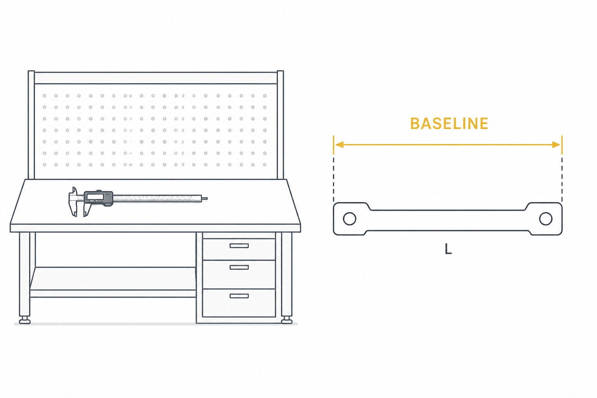
[x] #44The only phase round-2 review rated SOUND outright, and the cheapest high-leverage change available.
[x] Done — 1225 / 782 / 780 bytes on pp_harness / pp_codex / pp_agy. Verified live end-to-end: after an MCP reconnect the driver session's own context displayed all three strings verbatim as server instructions. Note the ≤2KB figure is a self-imposed budget, not documented — the MCP docs page carries no size limit, and a judge asserted a confirming quote for one at confidence 1.0 that turned out to be fabricated. Original task: add a server-level instructions string to all three MCP servers — harness-server.ts:1346, codex-server.ts:669, antigravity-server.ts:453 (the :1318 cited above went stale in the 2026-09-03 pull). Strictly navigational: lifecycle entrypoint order, the gate_eligible_judges routing entrypoint, and — new since authoring — cross-vendor required at every gate, judge-same-vendor supplementary only (JUDGE-2), the JUDGE-1a override channels, and the escalate/model mutual exclusion. Not a condensed driver.[x] Done, and stronger than planned: the hook_ prefix is reserved now and the guard asserts zero hook_-prefixed tools exist at this merge, so Phase L flips one assertion rather than rewriting the string. Also dropped the CONSTITUTION.md SHA in favour of a governance-identifier anchor guard. Original task: write it to survive Phase L. That phase registers ~26 hook adapters on this same server, taking it from 76 tools to roughly 100 — so instructions must never enumerate tools, and must mark the hook-adapter namespace as "invoked by hooks, not by you".[x] Done — get_run only, at 300,000 chars. This needed two edits and one alone would have shipped a silent no-op: ToolDef gained a metadata field AND the tools/list handler had to project it. replay was deliberately NOT annotated, correcting this plan's assumption that it needed a larger ceiling than get_run: measured, it is a subset — 23,588 chars at most (~5,897 tokens) against a 25,000-token default, ratio never above 0.28, because replay.ts projects eight explicit verdict columns with no critique_md while getRun does SELECT *. Annotating it would be dead configuration. The 500,000-char ceiling was verified first-hand (not via a judge): "up to a hard ceiling of 500,000 characters".[x] Ruled: annotate only, do not paginate in this phase. get_run cannot paginate today — GetRunSchema is { run_id } and getRun returns five parallel SELECT * arrays with no cursor. Annotation and pagination are sequential, not alternatives. The follow-up should evaluate projection (an include_critique_bodies: false flag) before offset pagination, since critique_md dominates and paginating five correlated arrays has a cursor-stability problem. replay must never paginate — a partial bundle is not reproducible.[x] daemon/test/mcp-instructions.unit.mjs — 45 real node:test subtests, plus a committed deterministic fixture builder daemon/test/fixtures/run-fixture.mjs.[x] Done via the fixture, which measures the real serialized payload rather than asserting declaration consistency. The Phase A baseline's 137,255 chars is the fixture's size floor, not the assertion — so a stale constant makes the fixture too small (visible at review) instead of making a false assertion pass.[x] Clean. Full suite 387 pass / 0 fail / 52 suites at --test-timeout=120000. The 343→387 delta is a reporting correction, not new coverage — the guard was first written as one hand-rolled case wrapping 43 assertions with a process.exit() that could truncate its own failure signal.If a check cannot be made to pass after reasonable effort, mark the phase
[f] and record why in Notes rather than looping forever.
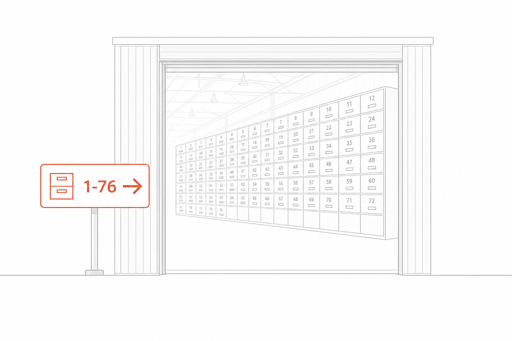
[x] #45From the official model-specific prompting guides for Opus 5 and Sonnet 5. pp is, in the guides' own terms, a "code-review harness" — both pages address that case directly. Two checks came back clean and are recorded as such; three are real.
[x] Done. Both judge agents gained a ## Reporting posture section. There was nothing to remove — but nothing instructing completeness either, which is why every judge dispatch in this campaign had to hand-inject "report every issue including uncertain ones". Now permanent, with three fences: not licence to pad (a finding needs a mechanism and a verified citation), does not move the verdict bands, and a long list of low findings is compatible with pass. The judge verified all four cited downstream filters exist — Borda in best-of-n.ts, findings-closure in getStageFinalizeReadiness, the PP-VG-4 missability gate, and the run summary. Original task: coverage-vs-filter split (enhancement). Verified clean: no "only report high-severity", "be conservative", or "don't nitpick" language exists in any judge agent or rubric, so pp has no recall regression. But the guides prescribe going further — instruct the finding stage to "report every issue you find, including ones you are uncertain about", with confidence and severity attached, and let a downstream stage filter. pp already has that downstream stage (Borda, findings-closure, missability), so the split is free to adopt.[x] Audited and KEPT, with the reasoning recorded in the file so a future guidance-driven cleanup cannot silently strip it. Every sub-step emits evidence an external judge reconciles against disk — (a) anti_pattern_hits, (a2) the same channel carrying a do_not_touch boundary pattern, (b) findings_closed/findings_unaddressed, (c) touched_hashes_path. The judge independently confirmed there is no pure re-read to trim, that the frontmatter pins claude-sonnet-5, and that nothing is delegated to a subagent — so the Opus 5 clause does not bite. Resolves Q5 as keep. Original task: audit engineer.md step 4.5. Opus 5 guidance says to remove "legacy harness scaffolding that adds separate verification steps" and to not "use subagents to verify or double-check your own work." Step 4.5 is mandatory self-verification. Nuance that must be preserved: 4.5 produces falsifiable evidence for the external cross-vendor judge, which is not self-double-checking. Keep the evidence-producing anti-pattern grep; drop anything that is purely a re-read. Note engineer.md is pinned claude-sonnet-5, so the Opus 5 over-verification guidance applies only where an Opus tier resolves.[x] Fixed, and the judge caught one of my fixes being wrong. Each now names the exact step and inlines its substance. But best-of.md:74 inlined the downgraded / PP-VG-7 semantics as if they came from run.md step 9 — step 9 says nothing about them, which is worse than the vague reference it replaced. Re-attributed to finalize_run's tool description where the guidance actually lives, and the underlying gap closed: run.md step 9 now tells the driver to check the flag before reporting a clean complete. Original task: fix the four same as /pp:run cross-references (best-of.md ×3, review.md ×1). Sonnet 5 "does not silently generalize an instruction from one item to another"; the guide's remedy is to state scope explicitly. Inline the referenced steps or name them exactly.[f] DROPPED 2026-09-05 — refuted. best-of.md's "verification step (3.5)" and engineer.md's 4.5.engineer.md:49 reads "3.5. Verification before commit (runtime smoke test)" and scopes itself to UI projects; best-of.md:39 says "runs the verification step (3.5) on UI projects" — exactly 3.5's scope. The reference is correct as written; 4.5 is a separate self-verification step. Cross-vendor judged REFUTED at high confidence by Codex gpt-5.6-terra, overturning both the original plan and a later audit.[] Rebaseline budget for the new tokenizer — MOVED to Phase H. Sonnet 5 "produces approximately 30% more tokens for the same text", so pre-Sonnet-5 thresholds will read as a regression. But every Claude-5 / gpt-5.6 / gemini-3.8 rate in daemon/prices.json:36-43 is a marked PLACEHOLDER — rebaselining against those compounds two unknowns. Confirm real rates first; it now lands with Phase H's ledger work.[] Recorded clean, no action: nothing in daemon/src sets temperature, top_p, or top_k on a generation path, so there is no Sonnet 5 400-error risk. best-of-N diversity already runs on prompt-level seed values, which is exactly what the guide recommends now that sampling parameters are rejected.[] Re-run the grep suite: zero conservative-filter phrases in judges/rubrics; zero same as /pp:run cross-references; zero temperature/top_p on generation paths.[] Judge recall measured on an archived-stage fixture set before and after the coverage-vs-filter split; recall must not fall.[] Step-4.5 audit does not reduce the evidence the cross-vendor judge receives — verify against a findings_closed fixture.[] Budget baseline re-recorded and annotated with the tokenizer change so historical comparisons stay honest.If a check cannot be made to pass after reasonable effort, mark the phase
[f] and record why in Notes rather than looping forever.
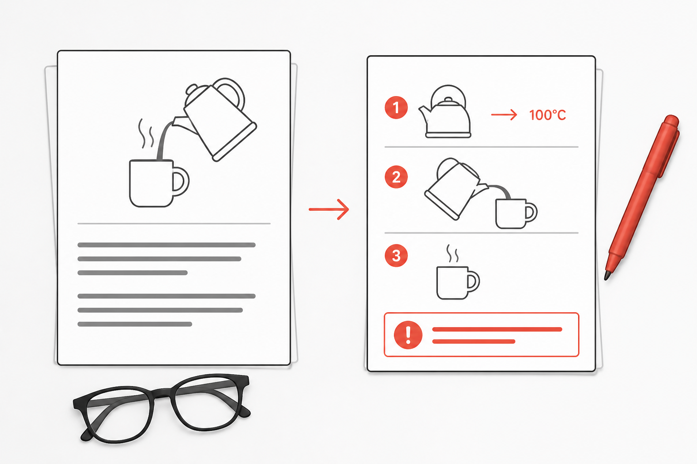
[x] #46Timeouts and wiring. Landed 2026-09-06 as run run_z6a4iH0m0V2G, closed
surfaced for two known daemon defects unrelated to this work (#59
— PP-VG-5 is unsatisfiable in mode="single"; PP-VG-2 blocks on Phase A's runbook).
Four stages, every closing verdict cross-vendor via agy gemini-3.8-flash-medium under JUDGE-1a.
Guard 40/40; full suite 387/387 across 52 suites; missability 8 pass / 0 fail / 49 n/a.
The if: predicates were dropped outright — see the task below; that was the phase's
one real finding.
[x] Done — all 29, not 26. Classified by
consequence-of-kill: BLOCKING and RECOVERY carry 30 s (the hooks.json baseline,
kept rather than invented); INFORMATIONAL carry 20 s. 20, not the spec's derived 15: the
eights-recall-* trio's daemon-side worst case is bounded at 14 000 ms
(ECOSYSTEM_PROBE_TIMEOUT_MS×2 + ECOSYSTEM_CALL_TIMEOUT_MS,
config.ts:450/:459), leaving 15 a ~1 s margin on Windows Node cold start — the
cross-vendor judge raised that as LOW-5 and it was adopted. 13×30 / 16×20 in both files. The
rationale is recorded in the template's own _comment so a future editor cannot flatten it
back to a blanket number.[f] DROPPED — adding if: would have silently
lost blocks. Hook handler matching is case-insensitive (dispatcher.ts:455/:459
for the path/kind match, plus 8 /i patterns in bash-safety.ts), while an
if: glob would be lowercase. A predicate that failed to match an upper- or mixed-case shape
would suppress the hook entirely — the failure mode of a security guard silently not running,
which is strictly worse than it running too often. The guard now asserts no if: key exists
anywhere in either file (AC-D34, whole-file), so any future reintroduction has to be deliberate and
has to solve the case problem first. if: predicates to the PreToolUse/PostToolUse
hooks.[x] Done, template only. statusMessage on
enforce-no-secrets and enforce-validator-gate — a while-running spinner line, so
the copy describes the check in progress, not its outcome. Deliberately absent from
hooks.json: Copilot CLI support for the field is unverified (Q8), and the guard asserts
that absence (AC-D33) rather than merely omitting the check, so a stray addition is caught.[x] Done — episodic recall is no longer inert. All three
eights-recall-* handlers wired in both .claude/settings.template.json and
hooks.json; both files now carry all 29. They call an external TheEights MCP peer over the
network, and every ecosystem wrapper short-circuits to null when it is unreachable
(daemon/src/config.ts:444-447) — verified fail-soft: an absent or hung peer cannot block a
session, a stage, or a prompt. Unwiring any one of the three is now a plain unexcused test failure
(AC-D22/23/24), where Phase A's guard had excused it under a self-expiring allowance.[x] Done, and the drift was wider than two lines.
README.md:152 and :236, plus docs/INSTALL.md:29 ("25 hooks"),
scripts/install-user.ps1:4 (also "25 hooks" — the docs judge caught this one still open after
the others were fixed), and docs/USER_GUIDE.md §18, whose three bumped subsection headings
contradicted their own tables until the three handler rows were added. All five §18 counts now match
(6/8/7/6/2).[x] Confirmed — no async, no
mcp_tool here. All 29 stay command hooks; Phase L migrates them after Phase H settles the
SQLite write discipline. Per D6 there is no async: true anywhere: it is command-hook-only,
mutually exclusive with mcp_tool, and five PostToolUse hooks write SQLite.[x] Cleared both self-expiring allowances (unplanned, and the
point of them). Phase A's guard shipped two named, self-expiring excusals. Wiring the recall
trio and adding the timeouts expired both on schedule — the guard went red with seven precise
STALE ALLOWANCE messages, each naming its pair, its file, and #46. Both constants, both
excusal branches (buildFileReport arity 5→4, diagnoseParity loses
staleAllowance) and six acceptance criteria are gone, replaced by fifteen strictly stronger
assertions. AC-D21 self-checks that neither allowance identifier appears anywhere in the file, building
each from string fragments at runtime so the assertion's own source cannot match itself. 25 → 40
subtests. The cross-vendor judge's ruling: coverage is stronger, not reduced.[x] Deny-reason repair (unplanned).
enforce-no-secrets reported only what it matched; it now names the remedy and states plainly
that there is no bypass, because fixing the artifact is the only route and an operator hunting for a flag
wastes the block.[x] Every hook declares an explicit finite numeric
timeout — asserted positively in both files (AC-D30), not merely "not exempt". The
0/-1/"30" invalid-timeout battery now reaches the template too
(AC-D26), which the file exemption had made unreachable.[x] Parity holds three ways. Handler names in
dispatcher.ts = wired set in .claude/settings.template.json = set in
hooks.json, all 29; and the timeout values match pair-for-pair across the two files
(AC-D31). A TIMEOUT_CLASS map — its coverage asserted set-equal to the handler inventory, so
no count literal is transcribed — pins 30 for BLOCKING/RECOVERY and 20 for INFORMATIONAL (AC-D32). Both
mutation-proved. The guard runs in the unit suite. Residual: the class assignment is
hand-written, so a handler reclassified in dispatcher.ts leaves the map stale — raised by the
judge as MED-1.[x] Verified by two out-of-band mutation proofs against the
real files: unwiring eights-recall-project from the template went red naming the pair
and the file; deleting daemon-up's timeout went red across parity, AC-D30, AC-D31 and
AC-D32. Both reverted with md5 verified byte-identical before and after.[f] N/A — the if: work was dropped. Replaced
by the inverse check: AC-D34 asserts no if: key exists in either file, whole-file, under any
event. if: predicate verified to still fire on the cases it must catch.[] Not measured — carried to Phase L. No hook that previously
succeeded slowly now times out. Phase A's baseline measured MCP result sizes, not per-hook wall time,
so there is nothing to compare against; the timeout floor (20 s against a 14 000 ms bound) is an argument,
not a measurement. Phase L's latency work is where this gets numbers.If a check cannot be made to pass after reasonable effort, mark the phase
[f] and record why in Notes rather than looping forever.
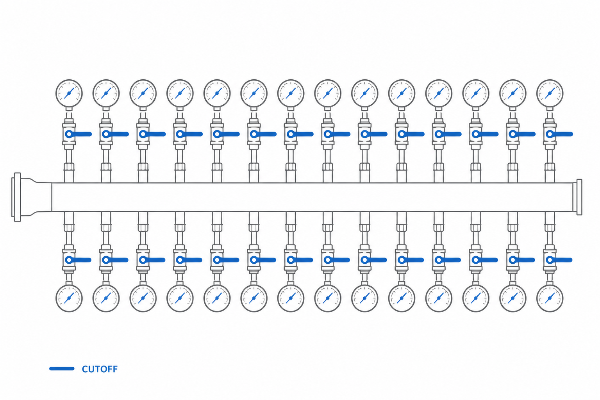
[] #38New 2026-09-05 — replaces the refuted Phase 5.1. The finding that 33 agents held an over-broad tool surface was wrong; those files are dangling pointers. This is the defect that was actually there, and it had already been filed independently as #38 on 2026-09-03.
[] Repair or remove all 50 stubs — 33 in .claude/agents/ and 17 in .claude/skills/. Each contains only an absolute path into a sibling checkout.[] #38 undercounts at 33. It scoped to dangling ExecutiveSuite links; C:/AiAppDeployments/AgentSmith is missing too, so the true count is 50.[] Decide per family: regenerate the overlay for this machine, or delete it — and drop the mirrored .github copies that #38 notes were left in place. Do not touch the targets; only this checkout's pointers.[] Sequence before Phase F. .claude/skills/ has zero directories today, so the SKILL.md migration would otherwise create them alongside 17 dangling pointers.[] git grep -rn "C:/AiAppDeployments" .claude/ returns nothing.[] scripts/sync-copilot-assets.mjs completes without the ENOENT abort described in #38.[] The 42 real agents and 11 real skills all still resolve.If a check cannot be made to pass after reasonable effort, mark the phase
[f] and record why in Notes rather than looping forever.
[] #47 · (D3)The 11 files in .claude/skills/ are not skills. Loose .md at the skills root
is not a documented layout, and this session's own skill listing confirms none of them load — while
run.md still instructs "Follow the pair-programmer skill protocol exactly."
[] FIRST change scripts/sync-copilot-assets.mjs — normalizeSkill (:240-250), the path-rewrite regex table (~:26), and :381-390. .github/skills/<name>/SKILL.md already exists but is generated from these loose files: it is the shape target, not a migration source. Treating this phase as a file move breaks the generator's input (Codex flagged it as dangerous).[] Then move each of the 11 real loose files to .claude/skills/<name>/SKILL.md. Note .claude/skills/ currently holds 28 entries: 17 broken pointer stubs, 11 real files, zero directories — Phase E must clear the stubs first.[] Update path references: AGENTS.md:26 and :94, run.md, and the mirror tests sync-copilot-comments.unit.mjs / sync-comment-injection.unit.mjs.[] user-invocable: false on the six harness-internal ones (judge-policy, rubric-application, taxonomy-adherence, artifact-conventions, master-plan-patching, profile-aware-gating): hidden from the / menu, still model-invocable, still preloadable.[] Do not use disable-model-invocation here — it blocks subagent preloading, which is the entire point.[] Add skills: preload to consuming agents: judge-cross-vendor / judge-same-vendor / judge-router → judge-policy + rubric-application; master-plan-patcher → master-plan-patching; taxonomy-mapper → taxonomy-adherence; designer / design-system-curator → the design-* set.[] Remove the now-dead "Read this file by path" instructions from those agent bodies.[] Land atomically: valid frontmatter, stable name, updated preload references, all in one commit.[] Discovery test against the pinned Claude Code version — each migrated skill actually appears. Round-2 condition.[] No agent body still references a skill by filesystem path.[] /context compared against the Phase A baseline; 11 new skill descriptions have not blown the listing budget. The per-entry description cap is real, so keep descriptions tight.If a check cannot be made to pass after reasonable effort, mark the phase
[f] and record why in Notes rather than looping forever.
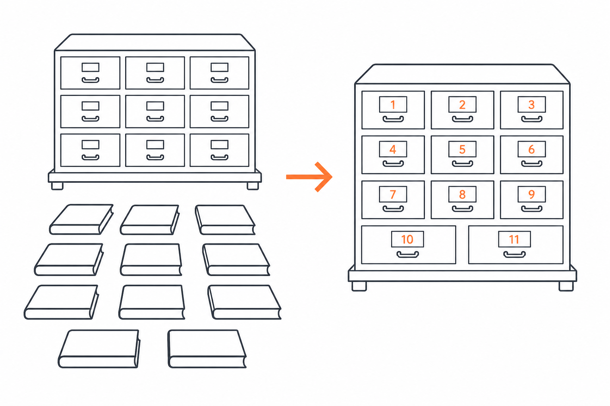
[] #48 · (D4)Four of sixteen available fields are in use across 75 agents. Split into a safe half (5.1) and a gated half (5.2–5.4) because round 2 correctly rejected my "zero quality impact" claim.
[f] 5.1 OBSOLETE 2026-09-05 — refuted. tools:/disallowedTools: to the 33 agents that declare no tools: and inherit the full surface including Write/Edit/Bash, against Hard Rule 5.C:/AiAppDeployments/… path. They have no frontmatter, so Claude Code never loads them as agents — there is no permissive-agent gap. Verified three ways (own count, Fable 5.1 audit, agy PowerShell pass): 75 files, 33 pointers, 33 without tools:, 33 without frontmatter — an exact overlap. The real defect is 50 dangling pointers (33 agents + 17 skills), now Phase E / #38. This phase applies to the 42 real agents only.[] 5.2 effort: low on non-verdict helpers (triage, profile-loader, taxonomy-mapper, run-finalizer, missability-inspector). Official Opus 5 guidance: "use low and medium liberally as your primary control for token cost."[] 5.2 effort: high on judge-cross-vendor and security-reviewer per D4. Sonnet 5 default is already high; xhigh is the documented setting for the hardest agentic work. Document explicitly that this sets the Claude wrapper's reasoning and is orthogonal to judge_reasoning_effort — the vendor CLI's effort, validated at runs.ts:1006-1012 and recorded on the verdict. It does not escalate the verdict; the judge model's effort remains the pin.[] 5.3 maxTurns: including engineer.[] 5.5 color: for transcript legibility; fold the flat agent files into harness/, exec/, smith/ subdirectories — .claude/agents/ is scanned recursively and only name: is identity. But make scripts/sync-copilot-assets.mjs recursive first: it reads .claude/agents flat at :373-377, so subdirectories would silently drop agents from the Copilot mirror.[] Each restricted agent still completes its canonical task — capability matrix verified, not assumed.[] Gate for 5.2/5.3: deterministic regression fixtures (round-2 correction — fixtures, not live "verdict parity") show protocol equivalence on judge output.[] Bounded-turn test proves maxTurns cannot truncate a valid Reflexion attempt.[] On failure, fall back to the non-gating-helpers-only subset and mark 5.2–5.4 [f].If a check cannot be made to pass after reasonable effort, mark the phase
[f] and record why in Notes rather than looping forever.
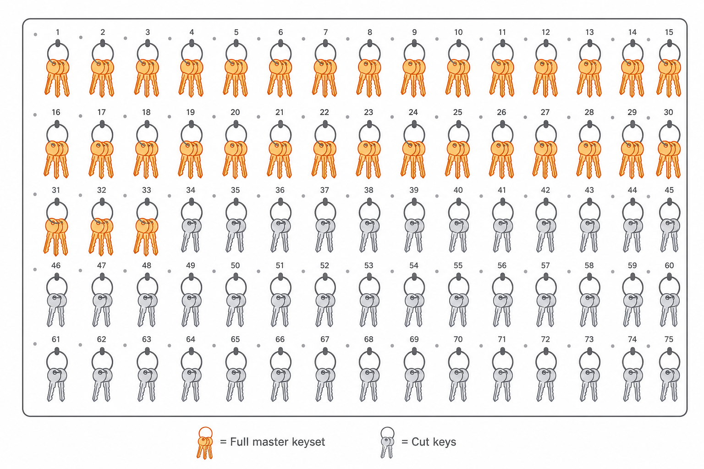
[] #49 · schema v11Round 2 rejected the original framing outright. Corrected principle: these are recovery observations, never manufactured ledger rows. A failed critique is not a generation attempt; conflating them corrupts the ledger's meaning.
[] Add a new idempotent execution-event record (call key, tool, run/stage correlation, status, cost), distinct from the attempts table, surfaced in replay and budget reporting.[] PostToolUseFailure on mcp__pp_codex__.*|mcp__pp_agy__.* → writes an execution-event. Today record-attempt/cost-tally fire only on success, so every failed critique is invisible. Evidence corrected 2026-09-05: the claim that .harness/critique_failures/ "exists because of this gap" is false as to causation — that directory is deliberate bridge archival written by cli-runner.ts:674-777 on final non-zero exit, independent of hooks (Codex: PARTIALLY CORRECT). The blind spot is real, and now has a live example: the agy critique that failed during this validation cost $0.27 over 600 s and appears in no budget_status.[] StopFailure (rate_limit|overloaded|authentication_failed) → mark an API-killed run surfaced with the reason instead of leaving it running. Two such runs are pending in this repo now.[] PreCompact/PostCompact → re-inject active run_id/stage_id via additionalContext.[] FileChanged (CONSTITUTION.md) → drift detector only. Explicitly not enforcement.[] Blocked on a correlation model: SubagentStop (matcher engineer). In best-of-N every candidate is producer="claude", so no mcp__pp_codex__* PostToolUse ever fires. But runs.ts:449-475 (cited as :433 when this was written) returns the existing slot row without updating it — a stop-handler that writes first permanently discards the engineer's real metadata, and one without the attempt_slot_id writes a second row. Prerequisite: persist a dispatch-time correlation record (subagent/task id → run_id, stage_id, attempt_slot_id), then have SubagentStop write a recovery observation reconciled later.[] Reinstated for review 2026-09-05: SessionEnd cleanup was dropped over a 1.5 s shared budget, but that budget extends to match a longer per-hook timeout, up to 60 s. Judge it on merit rather than on the stale limit.[] execution-events.unit.mjs: a failed critique produces exactly one execution-event and zero attempt rows.[] Idempotency: replaying the same hook payload twice produces no duplicate and no partial record.[] SubagentStop test proves exactly one attempt row per candidate with the engineer's metadata intact, or the sub-task stays [f].[] Budget totals reconcile: failed calls now appear in budget_status.If a check cannot be made to pass after reasonable effort, mark the phase
[f] and record why in Notes rather than looping forever.
[] #50Round 2 caught the real risk here, and it inverted the design.
[] Recognize that AGENTS.md is the cross-tool contract — Codex, agy, and Copilot read it and do not read .claude/rules/. Extracting the only copy degrades all three.[] Keep concise copies in AGENTS.md (or generate both mirrors from one source) and add Claude-only path-scoped .claude/rules/*.md with paths: globs.[] Scope to genuinely file-bound rules only: ANTI-STALL TEST RULE (daemon/test/**), git-plumbing (daemon/src/**), correct-module-before-edit (daemon/src/**).[] Governance invariants, Hard Rules, and run semantics stay in always-loaded AGENTS.md.[] A Codex critique run still receives every rule it received before — verified by diffing the rendered AGENTS.md content, not by agents_md_status, which reports section population and cannot prove semantic coverage.[] A Claude session touching daemon/test/** loads the anti-stall rule; one touching only docs/ does not.If a check cannot be made to pass after reasonable effort, mark the phase
[f] and record why in Notes rather than looping forever.
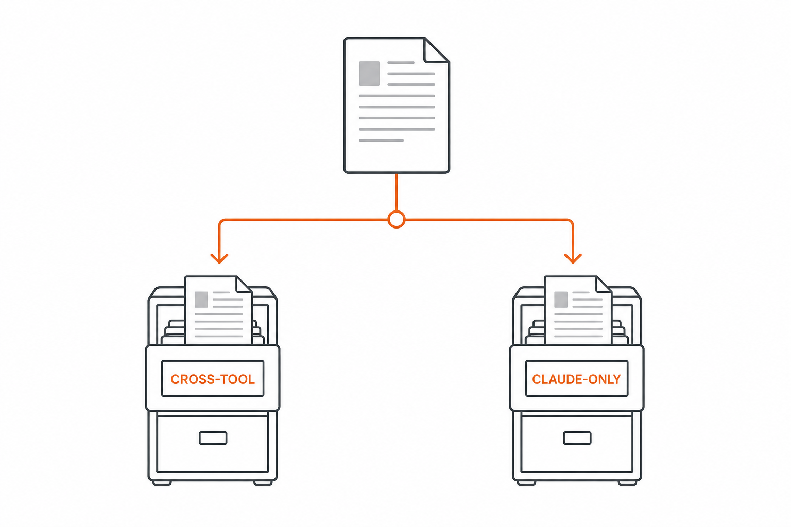
[] #51Two of roughly two hundred keys are in use. Round 2 insisted each item below is its own security/product decision rather than config hygiene, so they land separately.
[] permissions.deny on CONSTITUTION.md writes. Explicitly defense in depth, not inviolability — it constrains Claude's tool calls only, not a human or a shell. The daemon gate stays primary. Validate the exact path-rule syntax against the pinned version first.[] env block for the PP_* flags currently described only in a settings _comment, plus MAX_MCP_OUTPUT_TOKENS alongside Phase B.[] DEMOTED 2026-09-05. CLAUDE_CODE_MAX_SUBAGENT_SPAWN_DEPTH / CLAUDE_CODE_MAX_CONCURRENT_SUBAGENTS were framed as "the platform answer to the Windows parallel-spawn fragility". They are not: default concurrency already exceeds best-of-N's maximum N=8, so the caps change nothing for this workload, and the documented failure at run.md:271-277 (cited as :170 above) is process-group limits and pipe contention, which caps do not address. Codex judged this PARTIALLY CORRECT and dangerous to act on as a cure for Windows hangs. Add for hygiene if wanted; do not present as the fix.[] PP_DISABLE_AGY stays unset (default OFF = agy enabled); setting it would change the default vendor matrix, which is a product decision.[] statusLine/subagentStatusLine. Depends on the Phase H correlation work — it needs a durable way to identify the active run/stage, and must be fast and failure-tolerant. Note: a statusLine already exists at user scope but is broken — it points at bash /Users/robob/.claude/statusline-command.sh, a macOS path on a Windows host. Fix or replace it rather than assuming the slot is empty.[] Dropped: enableAllProjectMcpServers — changes the trust boundary, and is ignored in an untrusted folder anyway.[] A write to CONSTITUTION.md via Edit/Write is denied; the daemon gate independently still refuses.[] Spawn caps verified to bound a best-of-N fan-out at N=8 without breaking it.[] Status line degrades silently when no run is active.If a check cannot be made to pass after reasonable effort, mark the phase
[f] and record why in Notes rather than looping forever.
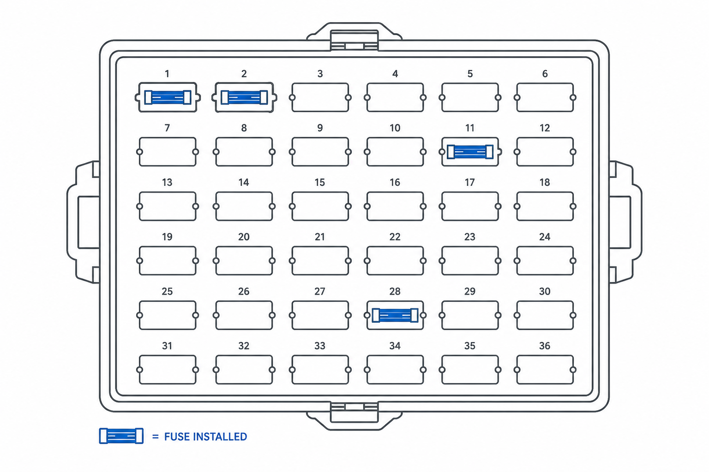
[] #52 · (D2)Round 2 corrected my boundary, and the correction was load-bearing.
[] Note the corrected span. In best-of.md, step 8 is judge routing and step 9 is judge execution, with 6.5 (smoke collection), 7 (diff entropy) and 9.5 (smoke post-filter) between them. Absorbing "step 6 + step 8" would have silently dropped smoke collection, entropy, verdict execution, Borda, and the smoke post-filter — changing winner selection.[] Author .claude/workflows/pp-best-of.js covering step 6 only: N-candidate parallel engineer dispatch and structured collection of the fan-out results.[] The prose driver retains steps 6.5 through 9.5 intact.[] The daemon still owns candidate worktrees, attempt slots, Borda, and archival. The workflow calls the same MCP tools the Task-dispatched engineers call today.[] Opt-in; the existing prose path stays as fallback. Set workflowSizeGuideline: small (N is 2–8).[] Protocol equivalence: the same N candidates, the same attempt slots, the same smoke results reach step 6.5 whether the workflow or the prose path ran.[] Winner selection is byte-identical across both paths on a fixture run.[] Verify no HITL gate falls inside step 6, so the no-mid-run-input limit costs nothing.If a check cannot be made to pass after reasonable effort, mark the phase
[f] and record why in Notes rather than looping forever.
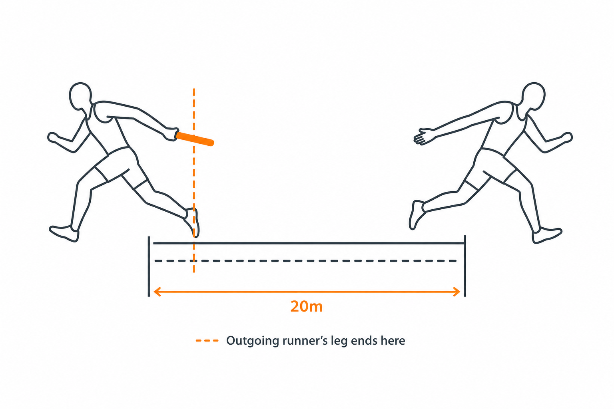
type: "mcp_tool" [] #53New 2026-09-05 — promoted from Q3, which had this as a deferred spike. The largest runtime saving identified anywhere in this plan: 26 Node cold-starts and SQLite reopens per event cycle, replaced by calls into the already-running pp_harness stdio server. Lands after Phase H so the write discipline is settled first.
[] Register the ~26 adapters on pp_harness (D5), not a new server — they share the daemon's DB handle directly. Accept the tool list growing 76 → ~100, and hold Phase B's instructions to the no-enumeration constraint. Give the adapters a consistent prefix so they stay separable in tool search.[] No async: true anywhere (D6). It is command-hook-only and mutually exclusive with mcp_tool, and five PostToolUse hooks write SQLite — cost-tally, record-attempt, loop-ceiling-tally, taxonomy-coverage-update, update-master-plan. Async there would make telemetry eventually-consistent and collide with Phase H's idempotency guarantees.[] Carve-out: daemon-up stays a command hook. It is the liveness probe — calling it over MCP is self-referential, since a dead daemon fails the transport rather than reporting cleanly.[] Map each handler's CLI payload onto the adapter's MCP input schema. Verify the mcp_tool hook contract carries a deny/allow result — the 7 PreToolUse blockers must still decide synchronously, and stay command hooks if it cannot.[] Update .claude/settings.json and hooks.json together; Phase A’s parity test guards the migration.[] Every converted hook shows identical observable behavior to its command form: same blocks, same telemetry rows, same ordering.[] Per-event-cycle latency measured against the Phase A baseline, delta recorded.[] hook-inventory.unit.mjs passes with the mixed command/mcp_tool set.If a check cannot be made to pass after reasonable effort, mark the phase
[f] and record why in Notes rather than looping forever.
model: haiku on read-only render commands [] #54New 2026-09-05 — promoted from Q4, which had this unscheduled. Eight slash commands are single-MCP-call renderers where the model only formats a result, yet no pp command sets model: at all, so the session model renders a table.
[] Pilot /pp:budget alone (D7) — one budget_status call, trivially verifiable output.[] The risk that shapes this. The claim "Haiku 4.5 supports tool search" could not be confirmed against current docs during validation — marked NOT-FOUND, not refuted. Every one of these commands calls a deferred MCP tool, so if Haiku cannot drive tool search, all eight break at once. The pilot settles it empirically.[] If the pilot passes, fan out to /pp:status, /pp:teams, /pp:rubrics, /pp:taxonomy, /pp:checklist, /pp:master, /pp:profile.[] Watch the three interpretive ones. /pp:status renders a run tree, /pp:master a master-plan document, /pp:checklist a completion checklist — these do more than format. Leave any that degrades on the session model.[] Each converted command produces output equivalent to the session model's on a fixture run: same rows, same fields, no dropped columns, no invented summary.[] Revert any command that fails, rather than accepting worse output for the saving.If a check cannot be made to pass after reasonable effort, mark the phase
[f] and record why in Notes rather than looping forever.
[] cd daemon && npm run build && npm run typecheck[] node --test --test-timeout=60000 daemon/test/*.unit.mjs — all 48 suites (corrected from 37 on 2026-09-05) plus the four new guards this plan adds. Prefer *.unit.mjs over npm test, which pulls in eights-integration.smoke.mjs and needs an external TheEights peer. The pre-existing producer-validation.unit.mjs failure this warned about is fixed — the test now accepts both phrasings (:192).[] /pp:doctor — daemon reachable, sub-CLIs installed, vendor matrix intact, JUDGE-1 pin unchanged.[] A full /pp:best-of 3 fixture run completes and picks the same winner as the pre-change baseline.[] /context compared against the Phase A baseline — net context cost has not increased.Same loop discipline as per-phase checks: nothing is done until every command here passes.
Updated 2026-09-05. Four of the five original questions are now settled; two became phases in their own right.
.claude/agents/ namespace, and a name collision would silently resolve to the wrong agent. —
Resolved: [x] closed by Phase E. The collision risk is
moot: the sibling agents are dangling pointers with no frontmatter, so none of them load at all. Revisit
only if the overlays are regenerated rather than deleted.grep on %PATH%, so every agy critique silently degrades to unverified
reasoning (run_kUPtCqHotdYn/postmortem.md). — Resolved:
[x] the stated mechanism is refuted. agy still has no
grep, but it does not degrade — it falls back to PowerShell Select-String /
Get-ChildItem and verifies fine (observed doing exactly that during the 2026-09-05
validation). doctor({smoke:true}) now returns exit 0 for the agy critique lane
and cross_vendor_ready: true. A different agy problem replaces it — see
#41, tracked as the Phase A blocker:
the lane serves a model other than the one requested, and no truthful verdict can be recorded for it.[x] promoted to Phase L
(#53). Scoped by operator decision:
mcp_tool adapters register on pp_harness (D5), no async
anywhere (D6), and daemon-up stays a command hook because it is the liveness probe.[x] promoted to Phase M
(#54). Note the original claim that
"Haiku 4.5 does support tool search" could not be confirmed against current documentation during
validation — marked NOT-FOUND rather than refuted. That is precisely why D7 pilots
/pp:budget alone before the other seven.engineer.md step 4.5 survives the Opus 5 over-verification audit. —
Resolved: [x] keep 4.5. It emits
findings_closed and touched_hashes_path, consumed by the external
cross-vendor judge (engineer.md:164-165). That is evidence generation for a third party, not
the self-double-checking the Opus 5 guide warns against. Phase C drops only what is purely a re-read.codex_* bridge failures in
.harness/critique_failures/ were rejected for a schema reason —
invalid_json_schema … Missing 'findings_provenance' — and commit 80a8a2b was
supposed to have fixed it. The Codex critique run during this validation succeeded and returned
that field, so the fix looks sufficient. — Why it matters: one green run proves the deployed
binary works today, not that the contract is right. Confirm against critique-schema.ts and
its tests before treating this as closed. — Resolved: [] openTwo independent adversarial rounds against Codex gpt-5.6-terra at medium reasoning
effort, read-only sandbox — the JUDGE-1 pin. agy was deliberately excluded rather than used alongside, on the belief that it could not resolve
grep on this host and so degraded to unverified reasoning. That reasoning was wrong —
see the 2026-09-05 amendment: agy has no grep but falls back to PowerShell and verifies
correctly. A different agy defect (#41)
now gates its use. Round 1 judged 13 findings; round 2 judged the resulting plan with repo access.
| Claim | Verdict | Outcome |
|---|---|---|
| Worktree lifecycle hooks for daemon candidates | REFUTED | Dropped. WorktreeCreate/WorktreeRemove observe Claude-Code-managed worktrees only; they would never fire for daemon-created paths. |
Command allowed-tools enforces the delegation contract | REFUTED | Dropped, repaired. It is pre-approval, not restriction. disallowed-tools is restriction and is used in Phases 4–5 instead. |
| Native OpenTelemetry | NOISE | Dropped. Observes Claude Code, not pp's cross-vendor lifecycle. SQLite stays authoritative. |
| Plugin migration | RISKY | Dropped by D1. Round 2 also found plugin-shipped subagents ignore permissionMode, hooks, and mcpServers — it would have cancelled part of Phase G. |
| Dynamic workflows do not exist | — | Not accepted. The reviewer ran read-only with no network. They are documented at /docs/en/workflows.md. Its design objection (no mid-run input, same-session resume) was accepted and is why Phase K is scoped to step 6. |
| Haiku cannot use MCP tool search | — | Not accepted. The docs list Haiku 4.5 explicitly. Recorded in Q4. |
The SubagentStop idea looked clean until round 2 pointed at runs.ts:449-475 (cited as :433 at the time):
re-calling record_attempt with the same pre-allocated slot returns the existing row
without updating it. So a stop-handler that writes first would permanently discard the
engineer's real metadata, and one without the attempt_slot_id would write a duplicate.
That is why Phase H now writes execution-events and recovery observations rather than manufacturing
attempt rows — and why a failed critique is never recorded as a generation attempt.
code.claude.com/docs/llms.txt and the reference pages for skills, sub-agents, hooks, MCP, plugins, settings, workflows, and the .claude directory.platform.claude.com/docs/.../prompting-claude-opus-5 and .../prompting-claude-sonnet-5 — the model-specific guides behind Phase C.H:\CommandCenter research corpus. It largely corroborates pp's existing design (graduated validation, tiered model routing, tool restriction, generator–verifier separation, bounded retries, shared knowledge base, provenance tracking are all already implemented). The one place it points somewhere pp is not: "Designing a Verifier AI Agent for Autonomous Coding Harnesses" Strategic Recommendation A2 — "Implement dynamic workflows for verification: Use Claude's workflows to encode GA→VA→GA loops" — which independently corroborates Phase K.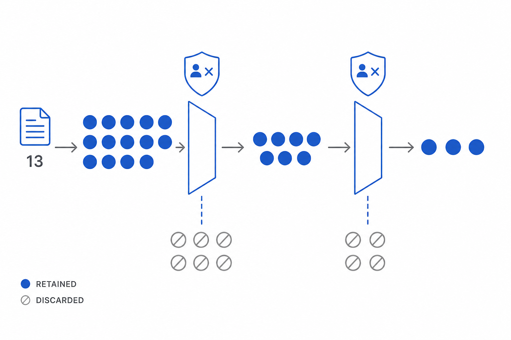
Append-only post-execution change history (newest at the bottom). Never rewrite history — only add.
The plan was authored 2026-08-24 against commit e12fcaa and never implemented — every
marker was still [], specs/ was untracked, and no commit
referenced it. Meanwhile the repo pulled 1468835 (2026-09-03), an unrelated judge-policy /
agy-pin / schema-v10 workstream the plan was never updated for. It was re-validated before any of it
was allowed to land.
A Fable 5.1 agent audited every phase and claim against the current tree, then Codex
gpt-5.6-terra (JUDGE-1) adjudicated 15 numbered claims under a refute-by-default rubric —
exit 0, outcome revise. An agy critique at gemini-3.8-flash-medium
was attempted first, per the cross-vendor pattern, and timed out with no verdict
(exit_code 1, reason: "missing outcome", 600 s across two 300 s attempts,
$0.27). Its partial transcript independently confirmed five claims via PowerShell before it died; that is
evidence, not a verdict, and it is recorded as such. Phase A re-runs it.
tools: and inherit
Write/Edit/Bash, against Hard Rule 5." Those 33 files are one-line pointer stubs naming
C:/AiAppDeployments/…, with no frontmatter — they never load. Verified three ways with an
exact 33/33/33 overlap. Replaced by Phase E (50 dangling pointers), already filed as
#38.engineer.md:49 is "3.5. Verification
before commit (runtime smoke test)" and scopes to UI projects; best-of.md says
"verification step (3.5) on UI projects". The reference was correct all along. Task dropped..harness/critique_failures/ exists because of this
gap" is false as to causation — that directory is deliberate bridge archival by
cli-runner.ts:674-777, independent of hooks. The blind spot is real and now has a
genuine example: the failed agy critique above cost $0.27 and appears in no
budget_status.13b4fa18 → 5df284cb; cross-vendor is now mandated at
every gate, not four gate types.runs.ts:857 → runs.ts:1057+; the agy exemption was removed
(J4) and producers are normalized on both sides.recordAttempt idempotency :433 → :449-475. The behavior — and
so the plan's "sharpest catch" — still holds.producer-validation.unit.mjs failure it warned about was
already fixed.harness-server.ts:1318 → :1346; run.md:170 →
:271-277.grep but does not degrade to unverified reasoning — it
falls back to PowerShell and verifies correctly.record_verdict's schema rejects the very override fields its own
error message demands. Independently reproduced here on a second transport with a
different substitute model, so it is not environment-specific. This blocks the campaign's own
execution model and is now the Phase A blocker.resumed telemetry lies. antigravity-server.ts:314 reports
resumed: !!existing even when --continue was correctly suppressed. It
produced a false contamination alarm during this very validation.hooks.json already sets timeoutSec: 30 on all 26 entries — the
timeout work has a baseline it did not know about..github/skills/ is generated, not a migration source, so Phase F must change
sync-copilot-assets.mjs before moving any file.mcp_tool conversion,
promoted from Q3), M (model: haiku, promoted from Q4).pp_harness), D6 (no
async), D7 (pilot /pp:budget), D8 (branch + issues + this file as tracker).daemon/prices.json:36-43.feat/cc-standards-alignment and mirrored to GitHub epic
#42 with one issue per phase.if: predicates dropped; two self-expiring allowances expired on schedulePhase D landed as run run_z6a4iH0m0V2G (four stages, every closing verdict cross-vendor
via agy gemini-3.8-flash-medium under JUDGE-1a). It changed the plan in two ways worth
recording.
if: predicatesThe plan called for if: predicates to stop block-destructive-shell running on
every Bash call and enforce-rfc2119-language on every Write/Edit. They were dropped
outright, not deferred. Hook handler matching is case-insensitive
(dispatcher.ts:455/:459 for the path/kind match, plus 8 /i patterns
in bash-safety.ts) while an if: glob would be lowercase. A predicate that missed
an upper- or mixed-case shape would suppress the hook entirely — a security guard silently not running,
which is worse than one running too often. The guard now asserts, whole-file, that no if:
key exists in either settings file (AC-D34), so a reintroduction must be deliberate and must solve the
case problem first.
Phase A's parity guard shipped two named, self-expiring excusals covering exactly the gaps
Phase D was meant to close. Wiring the three eights-recall-* handlers and adding the timeouts
expired both on schedule: the guard went red with seven STALE ALLOWANCE messages, each naming
its (event, name) pair, its file, and this issue. Both constants, both excusal branches
(buildFileReport arity 5→4, diagnoseParity loses
staleAllowance) and six acceptance criteria were removed and replaced by fifteen strictly
stronger assertions — 25 → 40 subtests, judged stronger, not reduced. This is the mechanism
working as designed and is worth keeping as a pattern: a temporary allowance that names its own remover
and fails loudly when the remover lands.
INFORMATIONAL hooks carry a 20 s timeout where the spec derived 15. The
eights-recall-* trio's daemon-side worst case is bounded at 14 000 ms
(ECOSYSTEM_PROBE_TIMEOUT_MS×2 + ECOSYSTEM_CALL_TIMEOUT_MS,
config.ts:450/:459), leaving 15 a ~1 s margin on Windows Node cold start. The
cross-vendor judge raised it as LOW-5 and it was adopted. The reasoning lives in the template's own
_comment so it cannot be flattened back to a blanket number.
daemon-up fail-open (FU-1). A timeout kill converts its fail-closed liveness
guard into fail-open in precisely the case it exists to catch. Accepted and documented; the operator's
own doctor call is the compensating control..claude/settings.json is git-ignored
(.gitignore:21) and rendered from the template by scripts/install-user.ps1 —
a full render at project scope, but at user scope only hooks is replaced and
permissions.allow unioned. Between a pull and the next installer run, repo and session
diverge and nothing detects it: the guard asserts template/hooks.json parity, not
template/installed parity.TIMEOUT_CLASS is hand-classified (MED-1). Its coverage is derived and asserted
set-equal to the handler inventory, so no count literal is transcribed — but a handler reclassified in
dispatcher.ts leaves the class assignment stale.surfacedTwo known daemon defects, neither caused by this work, and surfaced was requested directly
rather than being downgraded, so PP-VG-7's downgraded flag stays false.
#59: PP-VG-5 is unsatisfiable in
mode="single" — it resolves the winning attempt's candidate_index and looks for a
best-of-N smoke row a single-mode stage never writes (reproduced identically in Phase B). And PP-VG-2
blocks a complete on the profile's required runbook, which belongs to Phase A.